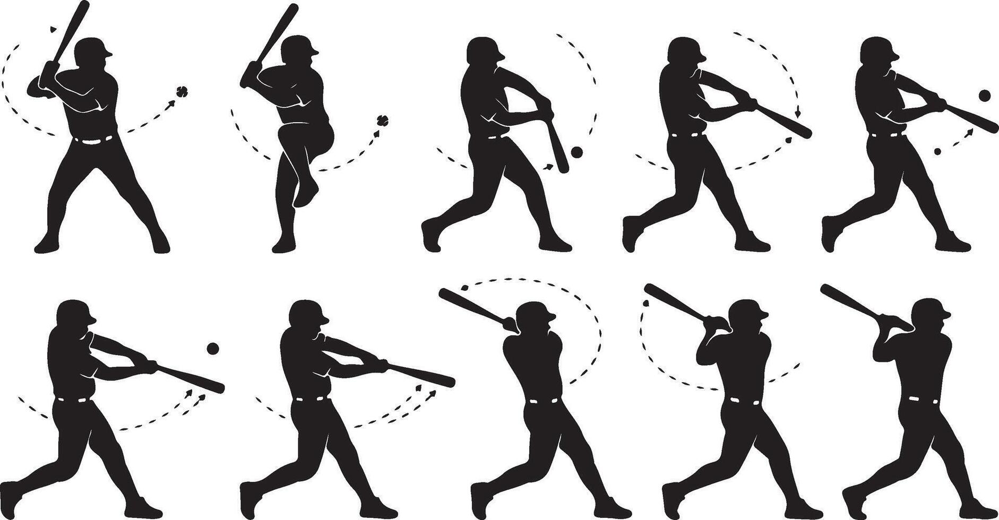

BASEBALL HEROES · WEB 1.0.42
Un swing con preparación, contacto y terminación
Secuencia corregida con tu referencia y efectos que ahora acompañan al lanzamiento, los resultados y el autojuego.
JUGAR ACTUALIZACIÓN · ESCUCHAR EFECTOS
Por qué se veía brusco
La preparación cambiaba de pose cada 15 ms, menos de un cuadro a 30 fps, y al acertar se saltaba directamente a la pose de contacto. El giro extra también inclinaba todo el cuerpo hasta 18 grados y desplazaba los pies.
Ahora se muestran las poses de preparación antes de llegar al contacto, seguidas por extensión, giro y recuperación. El pie adelantado conserva un ancla estable y la estela sigue la punta real del bat en cada pose. El ajuste adicional de puntería se limita a 6 grados.
Se reutilizan las ilustraciones aprobadas. Esta entrega corrige su reproducción y anclajes; no sustituye la cabeza ni anuncia dibujos nuevos.
Referencia y secuencia reconstruida

 Muestras del actor real con reloj controlado, desde la preparación hasta la recuperación. El Home Run mantiene su pausa de 130 ms.
Muestras del actor real con reloj controlado, desde la preparación hasta la recuperación. El Home Run mantiene su pausa de 130 ms.El impacto ya no se adelanta al bat
Tras pulsar, la animación tarda 100 ms en llegar al contacto. Durante ese tramo la pelota continúa hacia el barrel, en lugar de cambiar de lugar de golpe. Pelota, destello y sonido del batazo coinciden al llegar. La pausa de impacto se conserva:45ms en contacto normal y130ms en Home Run.
El timing se sigue evaluando cuando pulsas, con las ventanas Rookie de1.0.41. Se mantienen las probabilidades, velocidades, estadísticas y frecuencia de turnos manuales. Pasar al siguiente turno cancela los sonidos y destellos pendientes; al salir se liberan los canales. Los efectos pendientes del Derby usan su mismo reloj de pausa.
 Contacto en el Derby: pelota y destello junto al extremo del bat durante la pausa de impacto.
Contacto en el Derby: pelota y destello junto al extremo del bat durante la pausa de impacto.Sonidos que estaban sin reproducirse
Había eventos de pichada, swing y Single/Double/Triple sin un audio asignado. Otras señales estaban llamadas desde el juego, pero bloqueadas por la lista de fuentes permitidas. Se integraron 17 efectos recreados sin voz: salida de pichada, swing, guante, Ball, Walk, resultados de hit, celebraciones de Home Run y Grand Slam, bases llenas, Power/Lucky Hit, carga de combo, especial, entrada del héroe y transición.
Tus cuatro grabaciones se conservan sin modificar. Siguen activos el impacto especial de Home Run y los audios existentes de victoria y derrota. Single y Double usan señales instrumentales sin voz del gameplay. Una fanfarria adicional de campeonato queda disponible para escuchar, todavía sin conectarse a un evento.
Escuchar los 18 efectos y consultar su origen
Son aproximaciones sintetizadas para el remake. La publicación del compositor contiene música; esta búsqueda no permitió recuperar un banco verificado de efectos aislados. No se reactivaron los recortes rechazados por voz del narrador.
Pruebas y publicación
Cuatro suites locales: sincronía del swing/audio y pausa del Derby; regresiones de Rookie y sustituciones; recorrido con el SWF final; partido completo de nueve entradas. Se verificaron 64 condiciones de movimiento y audio, y Chrome decodificó los 18MP3 sin silencio ni saturación. También se dejó margen para el impacto principal: las fanfarrias de Home Run/Grand Slam y Power/Lucky Hit usan una capa menor, comprobada en mezclas simultáneas.
El partido completo terminó con estadísticas conciliadas y avance único de temporada. El intervalo de cuadro p95 fue de42ms en esta máquina. También se repitió en la web publicada el recorrido de registro, compras, equipamiento, alineación, persistencia y entrada al partido, sin errores de ejecución.
Las pruebas automatizadas no sustituyen tu evaluación del movimiento y de la mezcla sonora. Tus perfiles y avances se conservaron: copia consistente de SQLite y comparación dentro del servidor. Solo se retiró la cuenta sintética de prueba. La 1.0.41 se conserva localmente para recuperación; la biblioteca previa 1.0.42 sigue en el servidor. No se volvió a reiniciar el juego.
Análisis · Prueba del swing/audio · Partido completo · Recorrido público · Conservación de datos
Build dabe0dcf50ea4eaf
SWF SHA256 66c28289e8e0893ecf8e012534f82aa70b628bab6d23c7c9bfc3082985bb7885